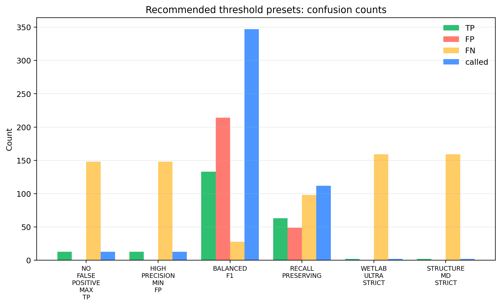
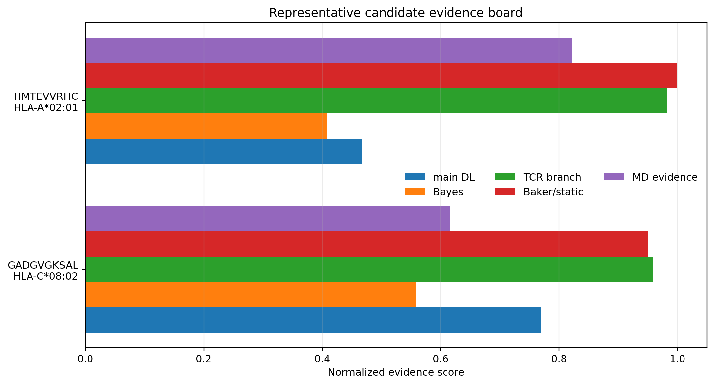
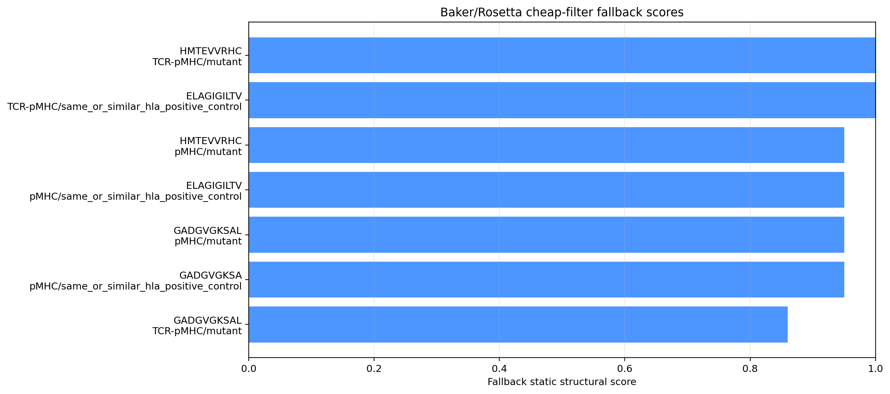

Overview Flow
전체 후보가 어떤 gate를 거쳐 줄어드는지 보여주는 대표 그림.
PNGA presentation-ready explanation package for the DL-first, TCR-aware, structure-audited neoantigen prioritization workflow.
| slide | title | figure or table | what to say | data used | decision |
|---|---|---|---|---|---|
| 1.000 | Problem: presentation is not recognition | fig_md24_story_overview_flow | CROSS-Neo starts with cheap prediction and only later escalates to TCR/structure/MD. This prevents spending MD/wetlab resources on broad noisy candidates. | TCR wetlab candidate table; DL-first stage counts | Use as opening overview. |
| 2.000 | Candidate universe and labels | Table 1 stage_label_composition_for_slides | The starting set has 649 candidates, 161 positive labels and 488 negative labels. The question is not positive-only discovery; it is robust positive triage plus negative/false-positive removal. | tcr_wetlab_candidate_prioritization_unique_pmhc.tsv | Show label reality before model results. |
| 3.000 | DL-first funnel | fig_md18_dl_first_candidate_funnel; slider dashboard | Cheap DL and uncertainty reduce candidates before any expensive structure/MD step. | all_predictions.tsv; Bayesian/dropout uncertainty tables | Main model operating flow. |
| 4.000 | Threshold optimizer | fig_md22_threshold_precision_recall_frontier; Table 2 presets | Instead of hand-tuning, labels are used to find operating presets. The strongest current no-FP setting gives 13 TP / 0 FP preset. | threshold_random_search_results.tsv; threshold_recommended_presets.tsv | Use this to argue the UI is decision-support, not arbitrary sliders. |
| 5.000 | Data lineage | fig_md25_data_usage_matrix; Table 3 data usage | Every score and figure is traceable to a specific table, with a claim boundary. | data_usage_manifest.tsv | Reproducibility slide. |
| 6.000 | Representative candidates | fig_md26_representative_candidate_board | HMTEVVRHC now has completed 10 ns MD_VERY_STRONG structural evidence (score 0.822) despite weaker main DL; GADGVGKSAL remains the balanced DL+TCR+MD candidate (MD_MODERATE, score 0.617) with a completed 10 ns replicate/control MD run. | dl_first_md_escalation_candidates.tsv; Baker fallback scores; md_evidence_scores.tsv; MD status | Use as candidate prioritization and mechanism-audit slide. |
| 7.000 | Claim boundary | fig_md8_claim_boundary | The pipeline prioritizes wetlab candidates. It does not prove immunogenicity or clinical utility. | decision reports; MD reports | Use this as reviewer defense. |
| stage | n | positive | negative | positive fraction |
|---|---|---|---|---|
| 00_all_candidates | 649.000 | 161.000 | 488.000 | 0.248 |
| 01_supported_peptide_length | 491.000 | 161.000 | 330.000 | 0.328 |
| 02_main_dl_broad_pass | 280.000 | 113.000 | 167.000 | 0.404 |
| 03_bayesian_dropout_pass | 97.000 | 56.000 | 41.000 | 0.577 |
| 04_robust_main_dl_pass | 97.000 | 56.000 | 41.000 | 0.577 |
| 05_source_compatible_tcr_after_dl | 90.000 | 50.000 | 40.000 | 0.556 |
| 06_paired_tcr_after_dl | 9.000 | 8.000 | 1.000 | 0.889 |
| 07_tcr_branch_supported_after_dl | 18.000 | 11.000 | 7.000 | 0.611 |
| 08_baker_structure_supported | 1.000 | 1.000 | 0.000 | 1.000 |
| 09_md_supported_or_complete | 1.000 | 1.000 | 0.000 | 1.000 |
| 10_tcr_rescue_reviews | 1.000 | 1.000 | 0.000 | 1.000 |
| 11_md_escalation_after_cheap_gates | 2.000 | 2.000 | 0.000 | 1.000 |
| 12_wetlab_shortlist_after_dl | 1.000 | 1.000 | 0.000 | 1.000 |
| preset name | call rule | called positive | TP | TN | FP | FN | precision | recall | F1 |
|---|---|---|---|---|---|---|---|---|---|
| NO_FALSE_POSITIVE_MAX_TP | md_escalation | 13.000 | 13.000 | 488.000 | 0.000 | 148.000 | 1.000 | 0.081 | 0.149 |
| HIGH_PRECISION_MIN_FP | md_escalation | 13.000 | 13.000 | 488.000 | 0.000 | 148.000 | 1.000 | 0.081 | 0.149 |
| BALANCED_F1 | non_culled | 347.000 | 133.000 | 274.000 | 214.000 | 28.000 | 0.383 | 0.826 | 0.524 |
| RECALL_PRESERVING | non_culled | 112.000 | 63.000 | 439.000 | 49.000 | 98.000 | 0.562 | 0.391 | 0.462 |
| WETLAB_ULTRA_STRICT | wetlab_shortlist | 2.000 | 2.000 | 488.000 | 0.000 | 159.000 | 1.000 | 0.012 | 0.025 |
| STRUCTURE_MD_STRICT | structure_md_supported | 2.000 | 2.000 | 488.000 | 0.000 | 159.000 | 1.000 | 0.012 | 0.025 |
| row id | peptide | hla 4digit | label binary | dl first decision | main dl score | bayes mean | tcr augmented score mean | baker structural score | current md evidence label | current md evidence score | current md run id | current md peptide rmsd final nm | current md tcr peptide contacts tail | completion fraction |
|---|---|---|---|---|---|---|---|---|---|---|---|---|---|---|
| CNV0_01132 | GADGVGKSAL | HLA-C*08:02 | 1.000 | DL_PRIMARY_SURVIVOR_WITH_PAIRED_TCR | 0.770 | 0.559 | 0.960 | 0.950 | MD_MODERATE | 0.617 | prod_10ns_6UON_2fs300K | 0.139 | 22.020 | 1.000 |
| CNV0_01151 | HMTEVVRHC | HLA-A*02:01 | 1.000 | TCR_RESCUE_REVIEW_AFTER_WEAK_MAIN_DL | 0.467 | 0.409 | 0.983 | 1.000 | MD_VERY_STRONG | 0.822 | prod_10ns_6VRN_1fs300K | 0.065 | 63.810 | 1.000 |
| id | title | main message | use in slide | claim boundary |
|---|---|---|---|---|
| Fig. A / fig_md24 | End-to-end DL-first recognition-aware funnel | The pipeline turns a broad labeled candidate set into a tiny, auditable wetlab/MD shortlist. | Opening overview figure | Enrichment and prioritization, not proof of immunogenicity. |
| Fig. B / fig_md25 | Data usage and evidence lineage matrix | Every claim has a traceable source table and a stated boundary. | Methods/reproducibility slide | Lineage map does not validate model performance by itself. |
| Fig. C / fig_md26 | Representative candidate evidence board | HMTEVVRHC now has the strongest completed MD signal, while GADGVGKSAL remains the more balanced DL+TCR+MD candidate with controls queued. | Candidate selection/case study slide | Candidate evidence does not establish clinical utility. |
| Table 1 | Stage-by-stage label composition | Positive fraction rises from 24.8% in the full set to 100% in MD escalation/wetlab shortlist under current settings. | Funnel performance table | Current-label enrichment only; external holdout needed for final claims. |
| Table 2 | Threshold operating presets | A no-false-positive preset found 13 labeled positives with 0 false positives in the current table. | Decision threshold slide | Preset is optimized on current labels and must be validated externally. |
| Table 3 | Data usage manifest | The pipeline is auditable from input label table to final UI. | Supplement/methods table | Documentation table, not performance evidence. |
| artifact | rows | used for | pipeline stage | claim boundary |
|---|---|---|---|---|
| TCR wetlab candidate table | 649.000 | candidate universe, labels, pMHC/TCR branch scores | input_registry | labels are dataset labels, not direct clinical immunogenicity proof |
| CROSS-Neo prediction ensemble | 81081.000 | main DL ensemble aggregation and rank evidence | DL_first_screen | model score is prioritization evidence, not a calibrated probability |
| Bayesian/dropout uncertainty tables | 649.000 | remove unstable or low-posterior candidates before expensive layers | uncertainty_gate | uncertainty summaries are internal triage metrics |
| DL-first funnel with labels | 13.000 | show how positive/negative composition changes across gates | dashboard_and_reporting | stage enrichment is retrospective on available labels |
| Threshold optimizer presets | 6.000 | label-aware operating point selection for slider presets | threshold_optimization | optimized on current labels; external validation required |
| TCR/structure/MD escalation candidates | 2.000 | identify candidates to send into structure/MD or wetlab controls | escalation | escalation means higher priority, not confirmed positive |
| Baker/Rosetta fallback interface scores | 7.000 | cheap structure sanity check before Rosetta/MD | cheap_structural_filter | static contacts are not Rosetta energies or immunogenicity proof |
| OpenMM MD status and evidence | 8.000 | late structural audit of peptide-MHC/TCR-pMHC stability | MD_audit | MD supports structural plausibility, not immune recognition proof |
전체 후보가 어떤 gate를 거쳐 줄어드는지 보여주는 대표 그림.
PNG
cheap DL/uncertainty stage별 후보 감소.
PNG
slider threshold operating point 탐색 결과.
PNG
추천 preset별 TP/FP/FN/called count.
PNG
어떤 데이터가 어느 계층에 쓰였는지.
PNG
대표 후보별 DL/Bayes/TCR/structure/MD evidence.
PNG
Rosetta 전 static contact 구조 sanity check.
PNG
MD evidence dashboard.
PNGThis is a decision-support and prioritization package. It does not prove immunogenicity, clinical utility, or universal TCR-aware SOTA.
{kind=link}
{kind=link}
{kind=link}